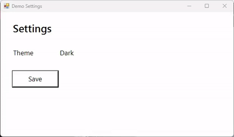
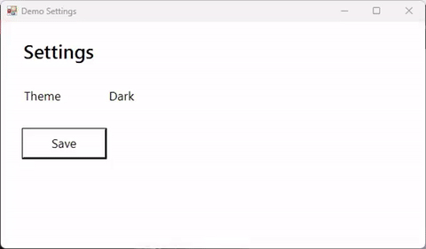

SCREENCAST-MCP / WORKFLOWS / REC 06
Zoom toward every click
A full-window recording makes viewers hunt for the cursor. Record with the input event log on, and zoom glides the camera in as each click happens, pans between clicks close together, rings the click, and zooms back out when things go quiet. The log never records what you type.
Record the Demo Settings window while I click Save, then make a version that zooms in on my clicks and highlights them.
start_recording (events) → stop_recording → read_events → zoom (follow clicks, highlightClicks) → export_gif. Paths are shortened; every value is from a real run.
- start_recording { "target": "window:Demo Settings", "fps": 30, "events": true }Starts a small input hook alongside ffmpeg. Keys are
maskedby default: the log says a key went down, never which.{ "sessionId": "rec-…", "eventsPath": "rec-….events.jsonl", "keys": "masked" } - stop_recording { "sessionId": "rec-…" }The log is converted to the video's clock and pixels as the recording stops.{ "durationSec": 6.9, "eventsPath": "rec-….events.jsonl", "events": { "moves": 1, "clicks": 1 } }
- read_events { "sessionId": "rec-…", "types": ["down"] }Each click with its video time and position. Handy on its own: sample_frames at those times shows what each click did.{ "matched": 1, "events": [{ "t": 3.183, "type": "down", "x": 91, "y": 204, "inFrame": true, "button": "left" }] }
- zoom { "input": "rec-….mp4", "dryRun": true }With an event log next to the recording,
followdefaults to clicks. The plan is editable: pass it back askeyframes.{ "follow": "clicks", "keyframes": [{ "t": 3.18, "x": 0, "y": 134, "width": 241, "height": 141 }, { "t": 5.18, "full": true }] } - zoom { "input": "rec-….mp4", "highlightClicks": true }The camera arrives on the click as it happens (the ease starts 0.6 s earlier), holds 2 s, and zooms out. Rings are drawn before the zoom, so they move with it.{ "outputPath": "zoom-….mp4", "follow": "clicks", "ringedClicks": 1 }
- export_gif { "input": "zoom-….mp4", "width": 480, "fps": 15 }{ "sizeBytes": 317734, "withinBudget": true }


No event log? zoom falls back to follow: "changes" and zooms toward where the screen changed. Keep the event log next to the original recording: its times and pixels match that file, not a trimmed or rescaled copy.
The same log drives keystroke_overlay: keycast-style badges for each click ("Double click", "Right click") and typing burst ("Typing…"), plus the shortcut you pressed ("Ctrl + S") when you recorded with keys: "shortcuts". In one pipeline call: [{ "op": "zoom", "keyframes": […] }, { "op": "keystroke_overlay" }, { "op": "backdrop", "preset": "rec" }]. Badges go on after the zoom, so they stay put at the bottom of the frame while the camera moves, and are re-timed through any trim before them.